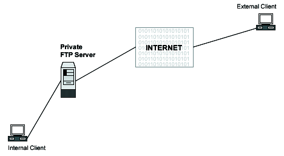

Various methods exist to configure your FTP servers. One is as a private user-only site, which is the default configuration for an FTP server; a private FTP server allows users on the Linux system only to be able to connect via FTP and access their files.
Anohter method is to configure as an anonymous FTP server. An anonymous FTP server allows anyone on the network to connect to it and transfer files without having an account. Due to the potential security risk involved with this setup, precautions should be taken to allow access only to certain directories on the system.
The configuration we will cover here is an FTP server that allows FTP to semi-secure areas of a Unix file system, chroot'd Guest FTP access. This configuration allows users to have access to the FTP server directories without allowing them to get into higher levels. This is the most secure setup for an FTP server.

These installation instructions assume
Commands are Unix-compatible.
The source path is /var/tmp, other paths are possible.
Installations were tested on Red Hat Linux 6.1 and 6.2.
All steps in the installation will happen in super-user account root.
wu-ftpd version number is 2.6.0
These are the Package(s):
| Wu-ftpd Homepage:http://www.wu-ftpd.org/ |
| Wu-ftpd FTP Site:205.133.13.68 |
| You must be sure to download: wu-ftpd-2.6.0.tar.gz |
To compile, you need to decompress the tarball, tar.gz.
[root@deep ] /# cp wu-ftpd-version.tar.gz /var/tmp
[root@deep ] /# cd /var/tmp
[root@deep ]/tmp# tar xzpf wu-ftpd-version.tar.gz
|